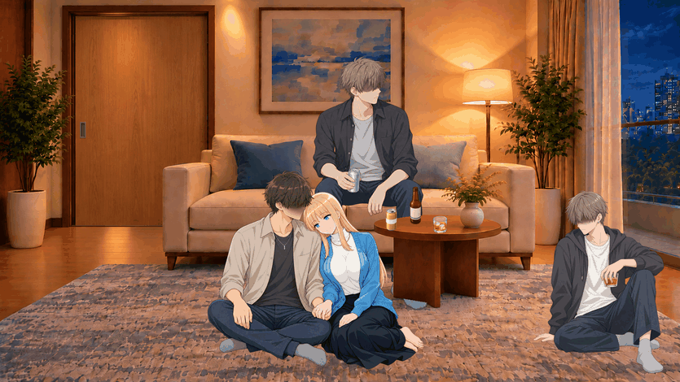
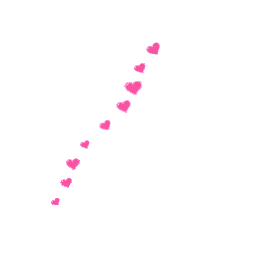
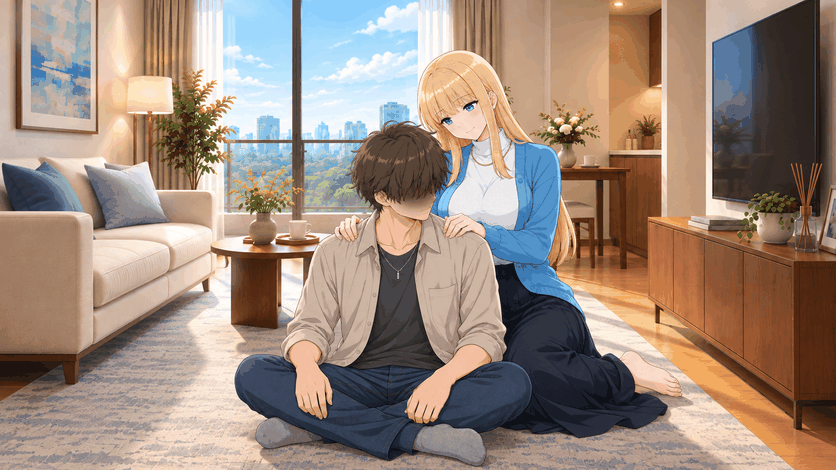
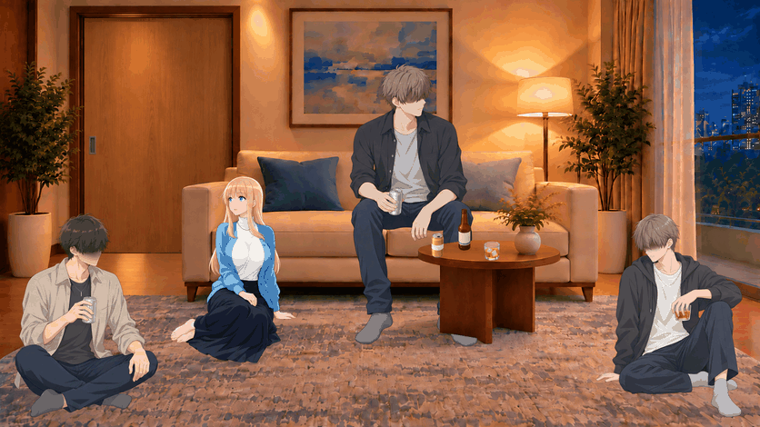
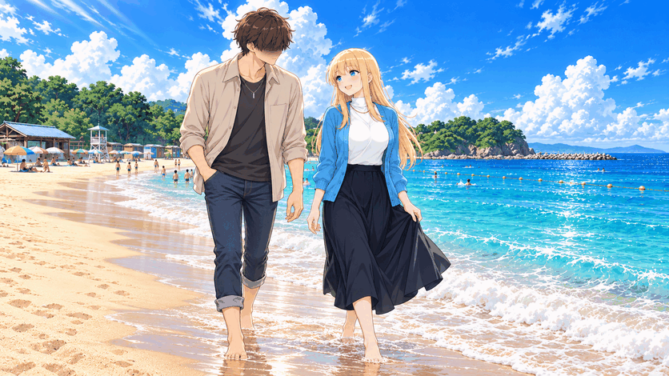
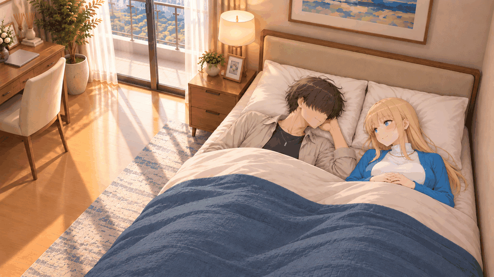
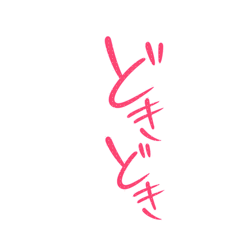
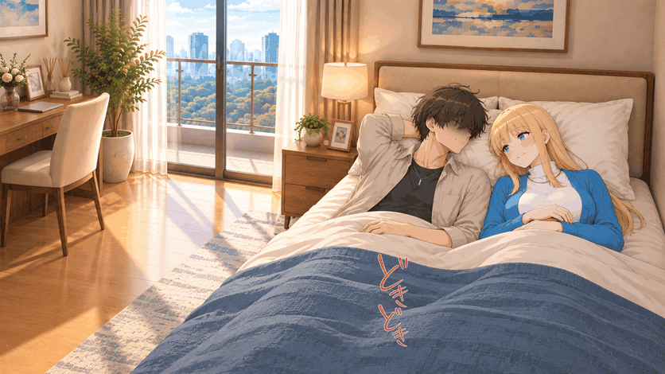
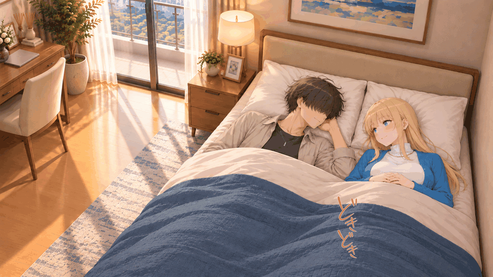
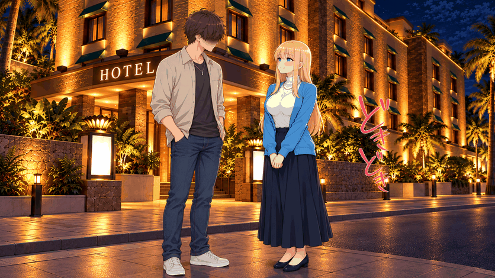

以前のGIF索引（13ファイル時点の説明）
現在の全量索引はGIF一覧を参照。以下は各GIFの用途・旧版の説明として残したものです。
GitHubへ掲載したGIF一覧
更新：2026-10-23。掲載GIFは13ファイル。資料の入口 ／ 参考シーン ／ 対応状況
単体の最新版と、合成場面・旧比較を区別しています。GIFは反復再生です。単体GIFの二値透過では半透明をディザで近似し、滑らかな半透明にはAPNG／WebPを使います。合成場面GIFは人物と背景が静止し、文字・効果だけが動きます。
びくっ びくっ・ピンク／時間差フェード
単体・最新版。 GIFを開く ／ WEBP ／ PNG
ハートを重ねた過去の場面プレビュー
旧比較・履歴。 GIFを開く

初期のハート流出・斜め方向
旧版・最新版とは別。 GIFを開く ／ WEBP ／ PNG

濃いピンクのハート・短い真上移動
単体・最新版。 GIFを開く ／ WEBP ／ PNG
リビング・肩をもみもみ
今回追加・合成場面。 GIFを開く ／ WEBP

絨毯・隣に座って寄り添う
今回追加・合成場面。 GIFを開く ／ WEBP
リビング・ノックに小さくびくっ
今回追加・合成場面。 GIFを開く ／ WEBP

海辺・散歩しながら嬉しそうに会話
今回追加・合成場面。 GIFを開く ／ WEBP

横になって添い寝・小さく笑い合う（紫文字の旧版）
旧比較・履歴。 GIFを開く ／ WEBP

<!-- dokidoki15 -->
どきどき改訂15の追加GIF
変更内容と独立素材。以下4点が今回の追加です。
どきどき・ピンク／小さめ／震え／重なる連続表示
GIF

昼・枕にもたれて照れながら会話・ピンクのどきどき
GIF

横になって添い寝・小さく笑い合う・ピンクのどきどき
GIF

ホテル前・待ち合わせで少し照れる・ピンクのどきどき
GIF

<!-- /dokidoki15 -->